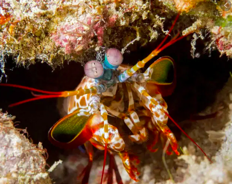

Fatos sobre o Stomatopoda
Informações gerais
Nome científico: Odontodactyçis scylarrus
| Reino | Filo | Subfilo | Classe | Subclasse | Ordem |
|---|---|---|---|---|---|
| Animalia | Arthropoda | Crustacea | Malacostraca | Hoplocarida | Stomatopoda |
Stomatopoda (ou estomatópode), chamados popularmente de tamarutacas ou de lacraias-do-mar no Brasil, é uma ordem de crustáceos marinhos da subclasse Hoplocarida, que agrupa cerca de 400 espécies, caracterizadas principalmente pela morfologia da segunda pata torácica, que é modificada em apêndice subquelado, lembrando uma pata de louva-a-deus.
Visão
O Stomatopoda têm a visão mais complexa do reino animal, superando até a das borboletas. O camarão mantis tem olhos compostos montados em talos e pode girá-los independentemente um do outro para examinar seus arredores. Enquanto os humanos têm três tipos de fotorreceptores, os olhos do camarão mantis têm entre 12 e 16 tipos de células fotorreceptoras. Algumas espécies podem até ajustar a sensibilidade de sua visão de cores.
Distribuição
O camarão mantis vive em águas tropicais e subtropicais em todo o mundo. A maioria das espécies vive nos oceanos Índico e Pacífico. Algumas espécies vivem em ambientes marinhos temperados. Os estomatópodes constroem suas tocas em águas rasas, incluindo recifes, canais e pântanos.
Dieta e caça
Na maior parte, o camarão mantis é um caçador solitário e recluso. Algumas espécies perseguem ativamente as presas, enquanto outras esperam dentro do covil. O animal mata desdobrando rapidamente suas garras raptoriais com uma aceleração surpreendente de 102.000 m / s2 e velocidade de 23 mps (51 mph).
O ataque é tão rápido que ferve a água entre o camarão e sua presa, produzindo bolhas de cavitação. Quando as bolhas entram em colapso, a onda de choque resultante atinge a presa com uma força instantânea de 1.500 newtons .
Portanto, mesmo que o camarão erre seu alvo, a onda de choque pode atordoá-lo ou matá-lo. A bolha em colapso também produz luz fraca, conhecida como sonoluminescência. Presas típicas incluem peixes, caramujos, caranguejos, ostras e outros moluscos. Os camarões louva-a-deus também comem membros de sua própria espécie.
- https://www.greelane.com/pt/ci%C3%AAncia-tecnologia-matem%C3%A1tica/animais-e-natureza/mantis-shrimp-facts-4582442
- https://pt.wikipedia.org/wiki/Stomatopoda